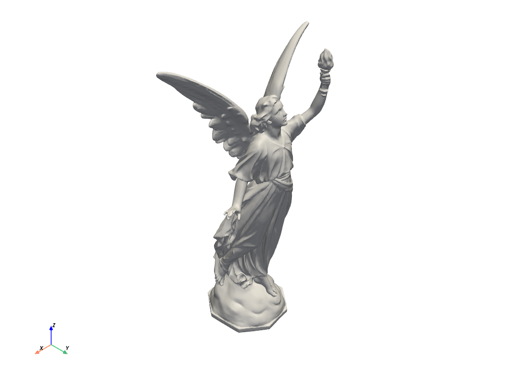

はじめに#
PyVistaをインストールするための唯一の前提条件は，Pythonそのものです．Pythonをまだ持っていなくて，最も簡単な方法で始めたい場合は， Anaconda Distribution を使うことをお勧めします．
PyVista は conda や pip を使ってローカルにインストールできます．また，クラウド上で Google Colab や MyBinder を使って PyVista を実行することもできます．より詳細な手順については，以下のインストールガイドを参照してください．
インストール#
PyVistaは，いくつかの環境にインストールすることができますが，これらに限定されません:
pip install 'pyvista[all]' jupyterlab
conda install -c conda-forge pyvista jupyterlab trame ipywidgets
その後、Jupyterで静的またはインタラクティブなバックエンドでプロットすることができます:
import pyvista as pv from pyvista import examples dataset = examples.download_lucy() dataset.plot(smooth_shading=True, color='white')
MyBinder#
MyBinderはGoogle Colabと同様に，クラウド上でJupyterノートブックを実行することができます．以下のリンクをクリックして，PyVistaを実行するためのMyBinder環境を開いてみてください．

Google Colab#
Google Colabは動いているターゲットで，PyVistaをとても素晴らしいものにしている "クラウド対応" のJavaScriptプロット環境の多くは，Google Colabでは利用できないようです．しかし，静的プロット機能を持つ Google Colab 用の PyVista サンプルはまだ動作しています．
PyVista on Colab ノートブックで，PyVistaが実際に動いているところをご覧ください．Colab環境でPyVistaを動作させるための最小限のコードは以下の通りです．
!apt-get install -qq xvfb libgl1-mesa-glx
!pip install pyvista -qq
import pyvista
pyvista.set_jupyter_backend('static')
pyvista.global_theme.notebook = True
pyvista.start_xvfb()